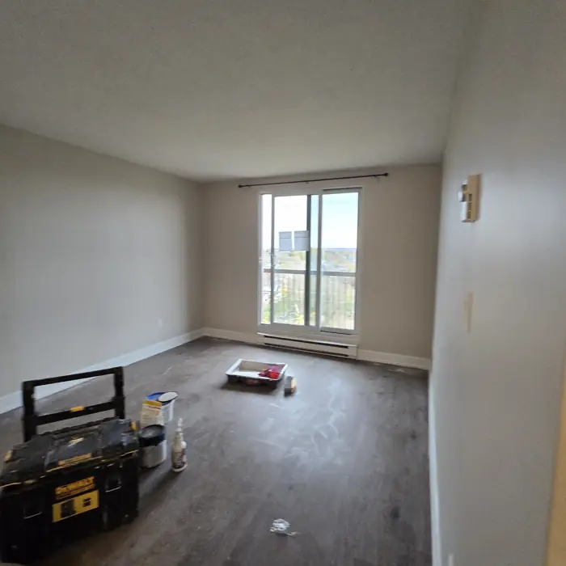

Home / Kingston
Apartment painting and drywall repair in Kingston
In Kingston we work on multi-unit residential buildings: apartment turnovers, repairs after plumbing and tile trades, and full unit repaints. The photos on this site are from recent Kingston apartment units. For Kingston we take multi-unit and property management projects rather than single small repairs.

Services in Kingston
What we do in Kingston
Drywall repair
Holes, cracks, water stains, torn paper and bad old patches.
Learn moreInterior painting
Paint only looks as good as the wall under it.
Learn moreRental unit turnovers
A vacant unit earns nothing.
Learn moreAreas covered: Multi-unit residential buildings across the city.
Questions
Kingston FAQ
Do you offer free quotes in Kingston?
Yes. Quotes are free in Kingston. Text photos to (343) 305-1787 or use the form on this page and you will normally have a written price within one business day.
What services do you offer in Kingston?
In Kingston we take multi-unit residential work: apartment turnover painting, unit repaints and drywall repair for property managers and contractors.
Do you repair walls before painting?
Yes. Every paint job includes filling and sanding dents, holes and cracks. Larger drywall or plaster repairs are quoted on the same estimate.